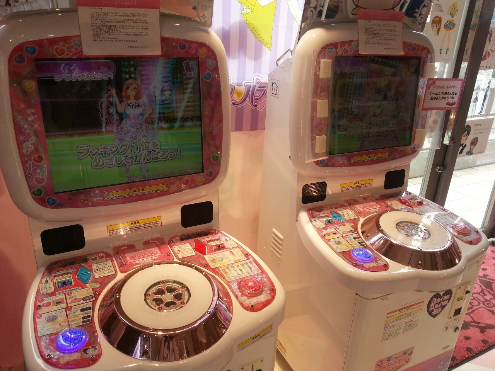
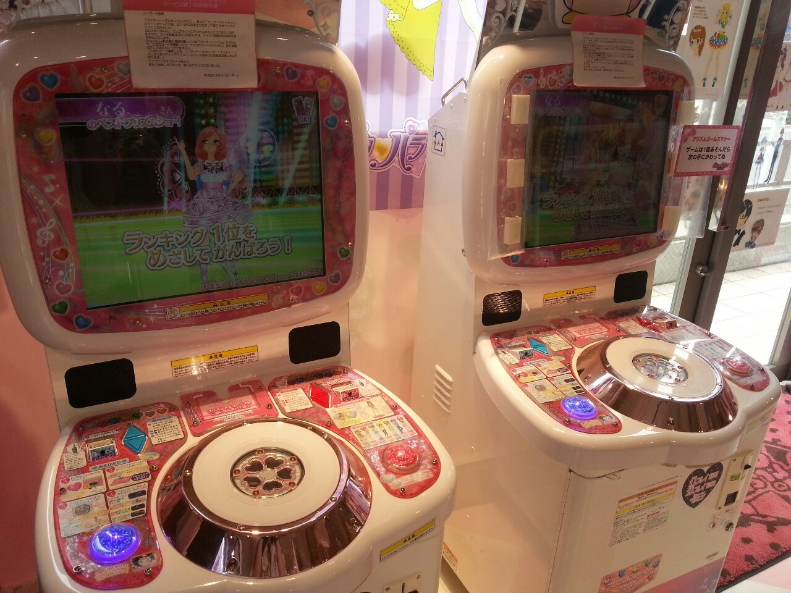

프리티리듬(한국판 명칭은 '프리즘스톤')은 2010년경 타카라토미사가 개발한 아케이드 게임기이다. 10대 소녀들이 그 타겟으로, '프리즘스톤'이라는 적외선으로 인식되는 스티커가 붙여있는 하트 모양의 플라스틱 아이템을 사용해 자유롭게 캐릭터를 코디하고, 리듬게임을 즐길 수 있도록 하였다. 아케이드를 원작으로 한 동명의 애니메이션도 있으며, '프리티리듬 오로라드림','프리티리듬 디어마이퓨처','프리티리듬 레인보우라이브'의 각 51부작의 세 시리즈물이 있다.
프리티리듬의 해외 진출 대만과 한국에 각각 진출하였다. 특히 한국은 '프리티리듬 디어마이퓨처','프리티리듬 레인보우라이브' 애니메이션을 한국의 애니메이션 제작사인 '동우 애니메이션'회사와 합작하여 제작했기 때문에 애니메이션 방영 및 상품 제작도 순조롭게 진행되었다.